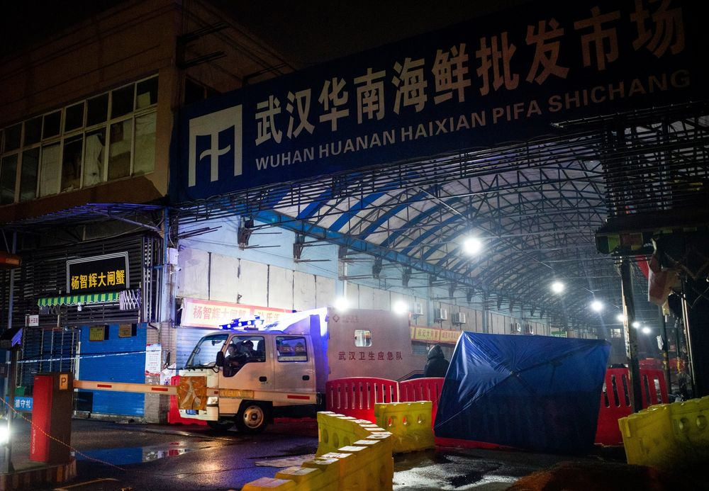
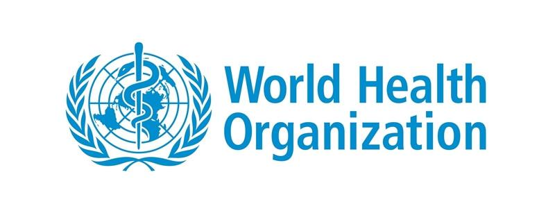
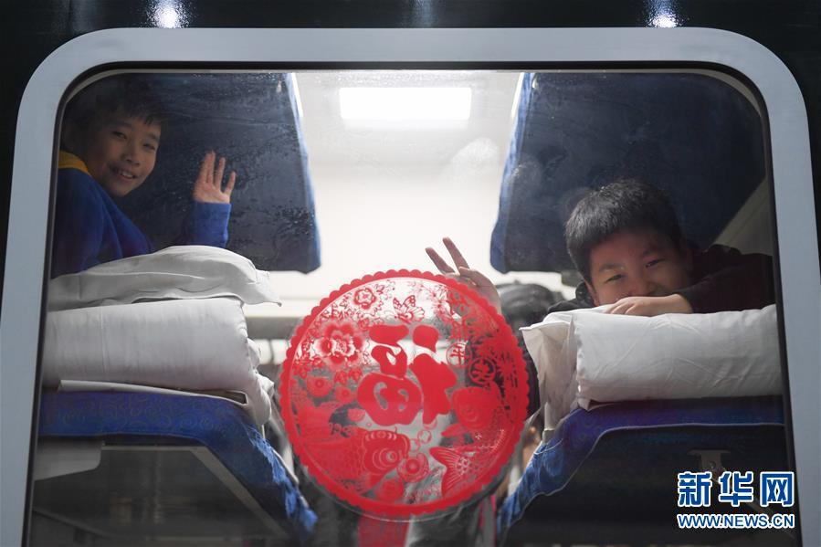
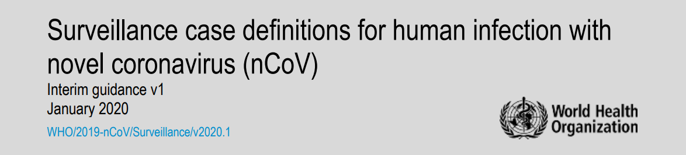
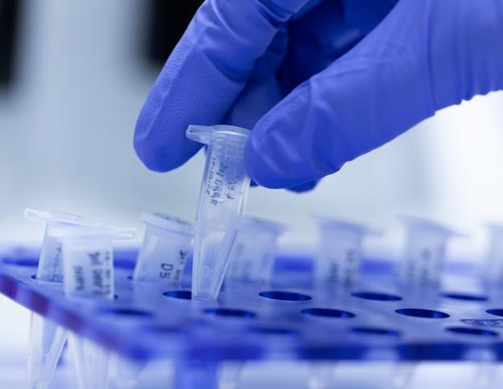
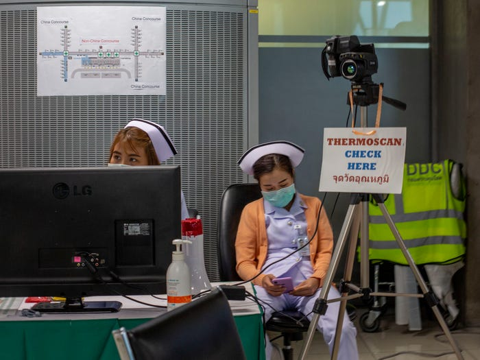
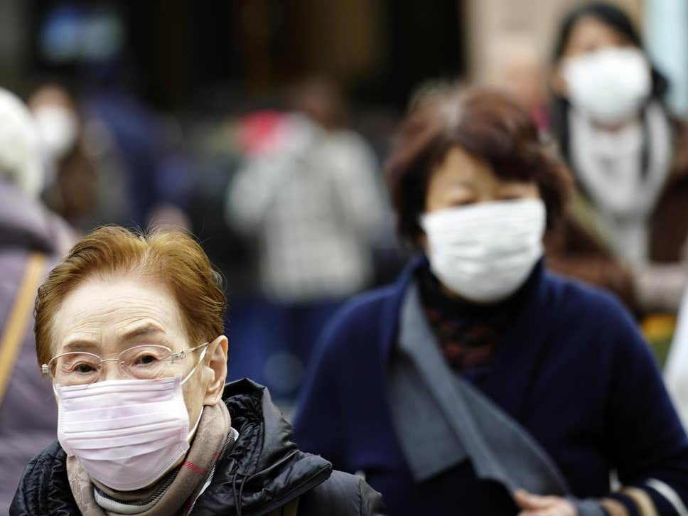
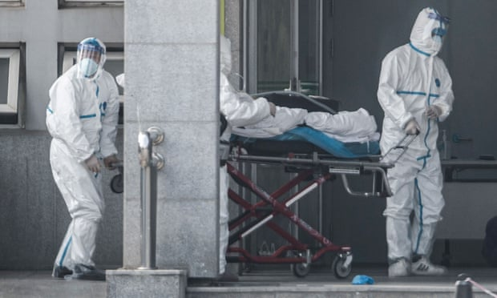
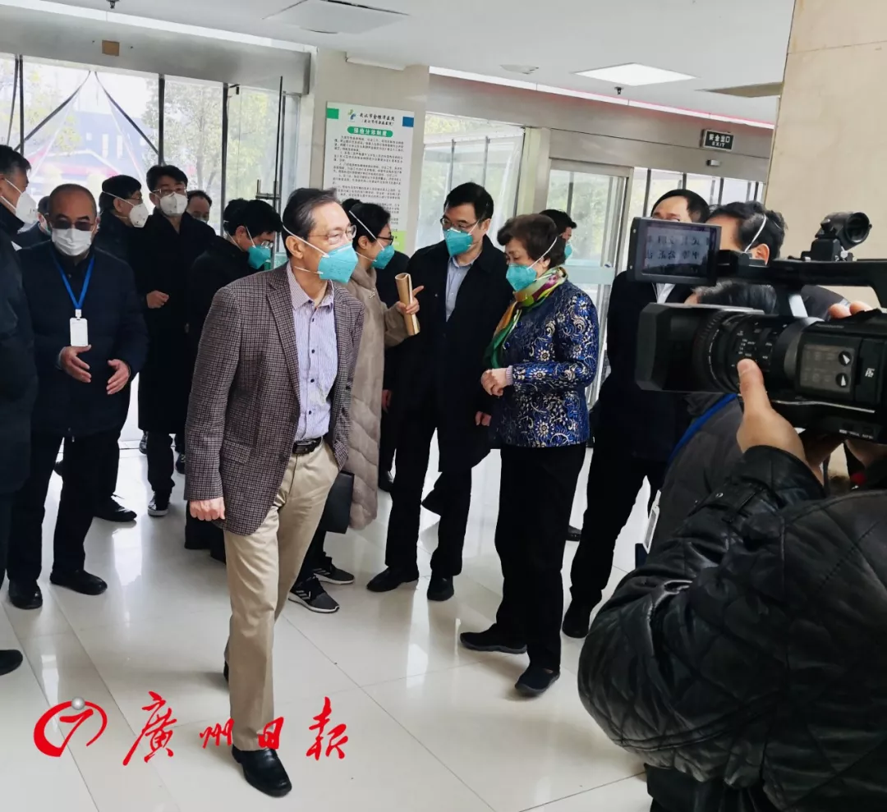

China: Wuhan 24 Days
12/31/2019 - Day 1
Wuhan Municipal Health Commission issued the first briefing on 27 cases (7 in critical condition) of pneumonia of unknown etiology detected in Wuhan City. Most of them had direct exposure to Huanan (South China) Seafood Market.
Source:
01/01/2020 - Day 2

Public security Bureau of Wuhan (@Weibo account) summoned 8 of the citizens who were believed to have posted and forwarded “untrue” information on the Internet and caused adverse social impacts, including Dr Wenliang Li, who was later recognized as the whistleblower of the virus.
Huanan (South China) Seafood Market was closed on 01/01/2020 for sanitation and disinfection.
Since the causal agent has not yet been identified or confirmed, WHO requested further information from national authorities of China to assess the risk.
Source:
01/02/2020 - Day 3
Chinese Center for Disease Control and Prevention (China CDC) has received the first 4 specimens of pneumonia of unknown cause.
Source:
01/03/2020 - Day 4
Chinese scientists at the National Institute of Viral Disease Control and Prevention (IVDC) under China CDC have completed the genetic sequencing of the first batch of specimens and ruled out the possibilities for 26 common respiratory pathogens. Comparative genomics study showed a novel β-genus coronavirus.
Wuhan Municipal Health Commission issued a second briefing. A total of 44 cases (11 in critical condition) were confirmed and 121 close contacts of the cases was being monitored till 8 am. Primary investigations found no obvious evidence of interpersonal transmission.
China formally notified US on the outbreak. At a White House briefing in March 20, Health and Human Services Secretary Alex Azar said officials had been alerted to the initial reports of the virus by discussions between CDC director Robert Redfield and Chinese CDC Director Dr. Gao on Jan. 3.
Source:
- http://www.chinacdc.cn/yw_9324/202002/t20200201_212137.html
- Li, Q. (2020). An outbreak of NCIP (2019-nCoV) infection in China—Wuhan, Hubei Province, 2019–2020. China CDC Weekly, 2, 79-80.
- http://wjw.wuhan.gov.cn/front/web/showDetail/2020010309017
- https://www.washingtonpost.com/national-security/us-intelligence-reports-from-january-and-february-warned-about-a-likely-pandemic/2020/03/20/299d8cda-6ad5-11ea-b5f1-a5a804158597_story.html
- https://www.nytimes.com/2020/03/28/us/testing-coronavirus-pandemic.html
01/04/2020 ~ 01/06/2020 - Day 5~7
01/05/2020
Wuhan Municipal Health Commission issued a third briefing. Till 8 am, 59 patients (7 in critical condition) were confirmed and 163 persons of close contacts was being monitored. Among the 59 patients, onset time varied from 12/12/2019 to 12/29/2019.
First virus strain was successfully isolated. Early investigations into the cause of the pneumonia ruled out seasonal flu, SARS and MERS.
Research team from Shanghai Public Health Clinical Center obtained the whole genome of the virus through high-throughput sequencing. Sequence analysis of the samples revealed 89.11% homology with SARS-like coronavirus. The agency immediately reported possible respiratory transmission to the National Health Commission.

WHO issued disease outbreak news urging emergency preparedness.
01/06/2020
China CDC launches secondary emergency response.
Source:
- http://wjw.wuhan.gov.cn/front/web/showDetail/2020010509020
- https://www.ncbi.nlm.nih.gov/nuccore/MN908947
- https://www.who.int/csr/don/05-january-2020-pneumonia-of-unkown-cause-china/en/
- Li, Q., Guan, X., Wu, P., Wang, X., Zhou, L., Tong, Y., ... & Xing, X. (2020). Early transmission dynamics in Wuhan, China, of novel coronavirus–infected pneumonia. New England Journal of Medicine.
01/07/2020 - Day 8
President Xi Jinping raised demand on the prevention and control of the pneumonia in Wuhan in a Politburo Standing Committee of the Communist Party of China meeting.
Scientists of IVDC confirmed the novel coronavirus isolated on Jan. 3 was the pathogenic cause of the viral pneumonia of unknown etiology (VPUE) cluster, and the disease has been designated novel coronavirus-infected pneumonia (NCIP). Scientists announced the discovery of a new coronavirus.
Source:
- http://cpc.people.com.cn/n1/2020/0216/c164113-31589205.html
- http://www.xinhuanet.com/2020-01/09/c_1125438971.htm
- Wang, C., Horby, P. W., Hayden, F. G., & Gao, G. F. (2020). A novel coronavirus outbreak of global health concern. The Lancet, 395(10223), 470-473.
01/09/2020 - Day 10
The first death from the virus occurred in a 61-year-old man who was a regular customer at Huanan Seafood market.
Chinese scientists interviewed by Xinhua News Agency announced they have detected a new coronavirus in the laboratory. The virus has been tested positive in 15 patients with the illness, and thus has been preliminarily identified as the pathogen for the outbreak.
Source:
01/10/2020 - Day 11

Chunyun (Spring Festival travel season) started. During the following 40 days, China would have an estimated 3 billion travelers.

WHO released several interim guidance documents including Surveillance case definitions for human infection with novel coronavirus and Laboratory testing of human suspected cases of novel coronavirus (nCoV) infection, showing early efforts on the detection of the coronavirus and invoking Chinese government reports that there was no clear evidence of human-to-human transmission.
Source:
01/11/2020 - Day 12
Fourth briefing from Wuhan Municipal Health Commission: among 41 confirmed cases, 2 have been cured, 7 were in critical condition and 1 died. All 739 close contacts of the 41 confirmed cases, including 419 healthcare workers have been monitored. No new cases reported after Jan 3.

The first viral genome sequence was shared to GENBANK and Virological.org (hub for prepublication data designed to assist with public health activities and research) by Professor Zhang Yongzhen of the Shanghai Public Health Clinical Centre.
Source:
01/12/2020 - Day 13
Fifth briefing from Wuhan Municipal Health Commission: among 41 confirmed cases, 6 cured, 7 were in critical condition and 1 died. Among 763 close contacts, 46 have been freed from medical observations (Since then it continued to report every day.)
WHO received further detailed information from the National Health Commission about the outbreak. The evidence was highly suggestive that the outbreak was associated with exposures in Huanan Seafood Market in Wuhan. At this stage, there was no infection among healthcare workers, and no clear evidence of human to human transmission.
Source:
01/13/2020 - Day 14

Thailand witnessed the first confirmed case outside China. The affected 61-year-old Chinese woman, who is a resident of Wuhan, had not visited the Huanan Seafood Wholesale Market. She had arrived in Bangkok on Jan. 8.
Source:
01/15/2020 - Day 16
Wuhan Municipal Health Committee published a Q&A regarding the coronavirus, stating: "current investigation hasn't found clear evidence of human to human transmission, however, the possibility of human to human transmission cannot be ruled out." A confirmed case of a couple might indicate family clusters.
China CDC raised the emergency response to level 1.
The first known travel-related case of 2019 novel coronavirus entered the United States. The patient from Washington with confirmed 2019-nCoV infection returned to the United States from Wuhan on January 15, 2020.
Source:
- http://www.chinacdc.cn/jkzt/crb/zl/szkb_11803/jszl_11809/202001/t20200119_211280.html
- Li, Q., Guan, X., Wu, P., Wang, X., Zhou, L., Tong, Y., ... & Xing, X. (2020). Early transmission dynamics in Wuhan, China, of novel coronavirus–infected pneumonia. New England Journal of Medicine.
- https://www.cdc.gov/media/releases/2020/p0121-novel-coronavirus-travel-case.html
- https://www.nytimes.com/article/coronavirus-timeline.html
01/16/2020 - Day 17

Japan confirmed first case of new China coronavirus strain. 30-year-old man tested positive to illness after visiting Wuhan.
Source:
01/17/2020~01/18/2020 - Day 18~19
01/17/2020
The third meeting of the 13th National People's Congress of Hubei Province closed successfully in the Hongshan Auditorium in Wuchang.
01/18/2020
The Thousands of Households Banquet was held in the Baibuting community for pre-celebration (one week before Chinese New Year) with forty thousand families in attendance.
China confirmed a second death (69-year-old man) in the pneumonia outbreak.
Source:
01/19/2020 - Day 20

After the first 41 laboratory-confirmed cases identified on January 2, officials announced no new cases for the next 16 days, but suddenly the eleventh briefing from Wuhan Municipal Health Commission reported 17 additional laboratory-confirmed cases (3 in critical condition), bringing the total number to 62 (Jan. 19).
Wuhan Municipal Health Commission also held a press conference to answer reporters' questions regarding the comprehensive prevention and control of pneumonia caused by new coronavirus infection in Wuhan. Director of Wuhan CDC responded that the possibility of human-to-human transmission could not be ruled out, but the risk of continuing human-to-human transmission was relatively low. Specimens of viral pneumonia patients were going through pathogenic tests only when Hubei CDC received the kits on Jan 16.

China sent a high-level expert panel from the National Health Commission to Wuhan for investigation. The team was led by Zhong Nanshan, academician of the Chinese Academy of Engineering(CAE), team member including Li Lanjuan (CAE), Yuan Guoyong (CAE), Gao Fu, director of China CDC, Zeng Guang, (Chief Scientist of Epidemiology, China CDC) and Du Bin, Director of Department of Critical Care Medicine, Peking Union Medical College Hospital.
Source:
01/20/2020 - Day 21
12th statement from Wuhan Municipal Health Commission: 136 new confirmed cases during the last 2 days, age of which varied from 25 to 89.
With the consent of the Chinese government, WHO sent a five-member delegation led by WHO's representative in China, Dr. Gauden Galea to Wuhan for a two-day investigation (January 20- 21). The delegation visited the Wuhan Tianhe Airport, Zhongnan hospital, Hubei provincial CDC, including the BSL3 laboratory in China CDC.
The high-level expert panel of the National Health Commission answered reporters' questions about pneumonia caused by new coronavirus. Zhong Nanshan confirmed the person-to-person transmission and the infection of healthcare workers. These key opinions were immediately sent to the National Health Commissions and reported to the State Council.
Chinese Communist Party general secretary, President of China, Xi Jinping gave important instruction on the pneumonia and said “people’s lives and health should be given top priority and the spread of the outbreak should be resolutely curbed.”
The Premier of the State Council Li Keqiang presided over the convening of an executive meeting of the State Council, during which he urged decisive and effective efforts to prevent and control the pneumonia outbreak caused by a novel coronavirus. Zhong Nanshan and Li Lanjuan also attended the meeting. Li Lanjuan suggested taking measures to restrict people in and out of Wuhan City.
China Central Television (CCTV) reported President Xi Jinping’s instructions on the pneumonia outbreak. A special program of CCTV, News 1+1, was set up today to fight the pneumonia outbreak. CCTV reporter Bai Yansong had a live interview with Zhong Nanshan, who spoke in front of public of the human-to-human transmission, warned people to avoid traveling to Wuhan and suggested wearing masks.
Source:
- http://wjw.wuhan.gov.cn/front/web/showDetail/2020012009077
- https://www.who.int/china/news/detail/22-01-2020-field-visit-wuhan-china-jan-2020
- https://www.chinadaily.com.cn/a/202001/21/WS5e26556ca31012821727269c.html
- http://www.gov.cn/xinwen/2020-01/20/content_5471057.htm
- http://m.news.cctv.com/2020/01/20/ARTIF4Fl7LEu8TRqIsnde93B200120.shtml
- https://www.theguardian.com/world/2020/jan/20/coronavirus-spreads-to-beijing-as-china-confirms-new-cases
01/21/2020 - Day 22
The cultural performance of Hubei Province in celebration of Spring Festival (Chinese New Year) was successfully held in Hongshan Auditorium.
China National Health Commission has released its first announcement. A total of 291 cases have been reported across the country, including Hubei (270), Beijing (5) Guangdong (14) and Shanghai (2). 14 provinces reported a total of 54 suspected cases.
Source:
01/22/2020 - Day 23
Hubei Province initiates level 2 emergency response to public health emergencies. According to the regulations, the task of releasing new cases of pneumonia now moved to Hubei Provincial Health Commission instead of that of Wuhan City.
The Hubei Provincial Health Commission held the first press conference on the prevention and control of pneumonia outbreaks. A total of 444 confirmed cases were reported (28 cured, 17 death).
Press Office of the State Council held a press conference on the prevention and control of pneumonia caused by new coronavirus.
North Korea temporarily closed its borders to all foreign tourists as a precaution to the coronavirus on Jan 22.
Source:
- http://wjw.wuhan.gov.cn/front/web/showDetail/2020012209088
- https://www.reuters.com/article/us-health-coronavirus-china-toll/chinas-wuhan-closes-coronavirus-hospital-as-officials-hail-drop-in-new-cases-idUSKBN20P01K
- http://wjw.hubei.gov.cn/fbjd/dtyw/202001/t20200130_2016538.shtml
- http://www.gov.cn/xinwen/2020-01/22/content_5471560.htm
01/23/2020 - Day 24
2 days before Chinese New Year.
Shutdown of Wuhan: Officials announced a quarantine of the greater Wuhan, China area to commence on Jan 23 2020 at 10:00 a.m. No traffic would be allowed in or out of the city, including all bus, metro and ferry lines.
The Wuhan Municipal Government promised to build an emergency hospital of 25,000 square meters and a capacity of 1,000 beds within 6 days. The construction would follow the model of Beijing Xiaotangshan that dealt with SARS in 2003.
National Health Commission released a detailed report of 17 death cases and published Diagnosis and Treatment plan of the new coronavirus infected pneumonia (trial version 3).
Source:
- http://www.bjd.com.cn/a/202003/27/WS5e7dea1be4b03cc9592dadfb.html
- https://twitter.com/ChinaDaily/status/1220052882596286465
- http://www.nhc.gov.cn/yzygj/s7653p/202001/f492c9153ea9437bb587ce2ffcbee1fa.shtml
- http://www.nhc.gov.cn/xcs/yqtb/202001/5d19a4f6d3154b9fae328918ed2e3c8a.shtml
- http://www.caac.gov.cn/XWZX/DFDT/202003/t20200311_201393.html
About
Powered by leaflet and D3.js
Authors: Jinmeng Rao, Jianxiang Qiu, Griffin Rock
Department of Geography, UW-Madison